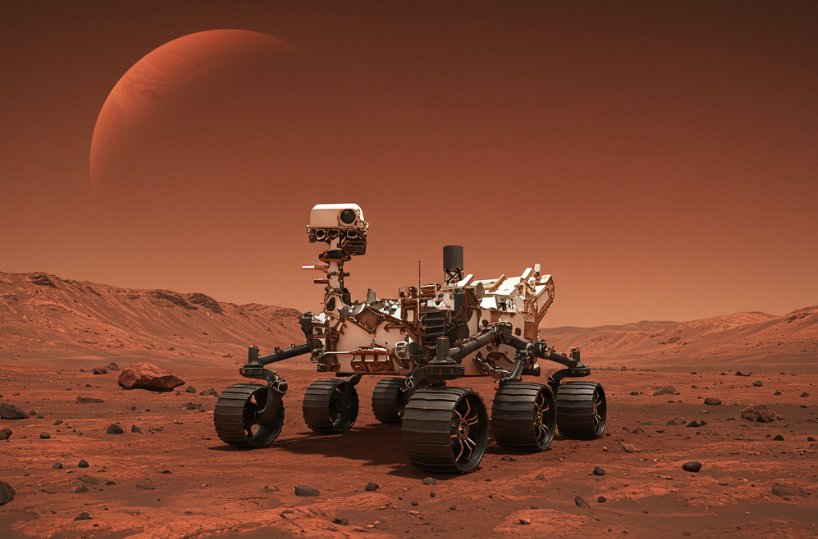

Curiosity
Agencia: NASA
Fecha de lanzamiento: 26 de noviembre de 2011
Duración: Operativa desde 2012 (misión extendida)
Tipo de misión: Rover de exploración
Objetivo: Investigar si Marte pudo haber albergado vida microbiana en el pasado, estudiar el clima y la geología marciana y preparar el camino para futuras misiones humanas.
Carga científica: Espectrómetros, cámaras de alta resolución, estación meteorológica, laboratorio químico (SAM), detector de radiación, sonda de neutrones y más.
Impacto histórico
Curiosity revolucionó nuestro conocimiento sobre Marte. Demostró que el planeta rojo tuvo agua líquida en el pasado y ambientes potencialmente habitables. Ha enviado miles de imágenes y datos científicos clave, siendo un emblema de la exploración robótica moderna y un puente hacia futuras misiones humanas.